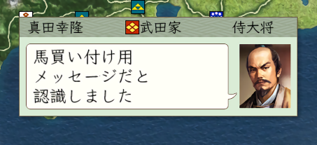
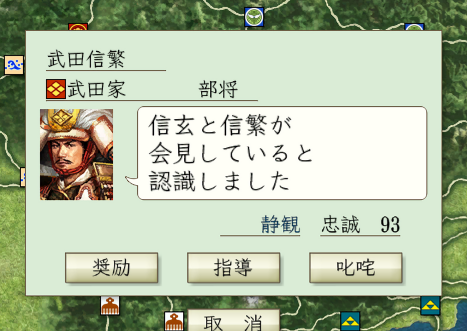

On_噴出メッセージ直前
武将の吹き出しのメッセージ等、メッセージ的なものが表示される直前のタイミングで
呼ばれるイベントハンドラとなります。
文字列を返すことで、元のメッセージではなく、返したメッセージ内容に変更することが可能です。
使い処
主として特定の武将や特定の条件を満たした場合に、元のメッセージ内容を変更する際に使います。
使用例①
まずは使い方の基礎をしりましょう。
文字列がどういった内容なのかを判定するためには、
「文字列系に○○が含まれる」といった趣旨の判定が必然的に多くなります。
このように、ひたすらString->Containsを繰り返すことでもある程度は判定が出来ますが、
スマートではありません。
正規表現を使えば以下のようになります。
天翔記のメッセージの改行コードは通常とは異なり「\xA」となります。
注意してください。
米だけではなく、馬や鉄砲にも対応するなら、以下のようになります。
使用例②
実際のメッセージをすりかえる際には、「誰が言ったメッセージなのか？」
が一番大きな手掛かりとなるでしょう。

使用例③
メッセージを取り扱う以上、その一部分を抽出する、
といったことは欠かせません。
.NET FrameWorkの汎用的な正規表現のメソッドとなるため、詳細は割愛しますが、
以下のように部分文字列を抽出する記述も多くなることでしょう。
使用例④
噴出しメッセージでは２人の人間が会話をしていることが多いため、
誰が誰に話しているのか？
という第２人称も重要になることが多くなります。

各シチュエーションのセリフ
各シチュエーションのセリフがどういった内容なのか？
については、「天翔記 wiki」によく纏まっています。
その他
「On_噴出メッセージ直前」イベントハンドラについて、主な解説は以上となります。